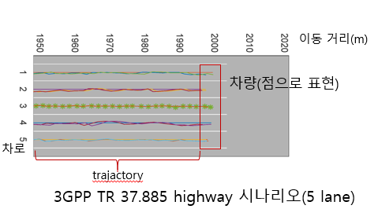

이동체 대상 시스템을 위한 위치 기반 검증 플랫폼
개발 동기
- 자율 주행을 필두로 자동차와 IT 접목에 대한 관심도 증가
- 자동차 시장은 5G 시스템의 주요 산업군
- 자동차를 대상으로 하는 시스템이 지속 증가할 것으로 예상
서비스 개요
- 자동차를 대상으로 하는 알고리즘의 검증 플랫폼 개발
서비스 구현
기능 요소
- 현실 모사 주행 환경 제공
- 자동차 대상 알고리즘 검증
System 구성
두 모듈을 TX-RX 형태로 구성
서비스 검증
협력 분산 측위 알고리즘 검증에 본 플랫폼 적용
- 기존 알고리즘 검증 
- refence 위치 차량 및 요검증 algorithm으로 주행 위치 획득 차량 모두 선으로 표기
- 차량은 선 종류 및 선색으로 구분
- 개발 플랫폼을 이용한 검증
- 초록색 차량 : reference 위치 차량
- 노란색 차량 : 요검증 algorithm으로 주행 위치 획득 차량

개발 과정
project management tool(redmine)을 사용하여 개발 과정을 기록하였습니다.
redmine